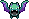

華藍洞窟 B1Cerulean Cave B1F
- 地區
- 關都
- 種類
- 洞窟與室內
野生寶可夢
白天
| 寶可夢 | 等級 | 機率 |
|---|---|---|
 百變怪 百變怪 | 60-74 | 19.4% |
 頑皮雷彈 頑皮雷彈 | 60-68 | 16.7% |
 派拉斯特 派拉斯特 | 60-68 | 13.9% |
 三合一磁怪 三合一磁怪 | 60-68 | 13.9% |
 鑽角犀獸 鑽角犀獸 | 62-74 | 11.1% |
 雷丘 雷丘 | 60-68 | 8.33% |
 嘟嘟利 嘟嘟利 | 60-68 | 8.33% |
 胡地 胡地 | 64-74 | 5.56% |
 吉利蛋 吉利蛋 | 62-70 | 2.78% 稀有 |
夜晚
| 寶可夢 | 等級 | 機率 |
|---|---|---|
| 百變怪 | 60-74 | 20% |
 大嘴蝠 | 60-74 | 20% |
| 頑皮雷彈 | 60-68 | 17.1% |
 胖可丁 胖可丁 | 60-68 | 14.3% |
| 三合一磁怪 | 60-68 | 14.3% |
| 雷丘 | 60-68 | 8.57% |
| 胡地 | 64-74 | 5.71% |
傳說
 超夢： 0.5% 每次野生寶可夢出現時，成為關都聯盟冠軍之後。
超夢： 0.5% 每次野生寶可夢出現時，成為關都聯盟冠軍之後。
百分比是該地圖、該時段每次生成野生寶可夢時抽到這一隻的機率。天氣若符合寶可夢的屬性，出現率會提高。